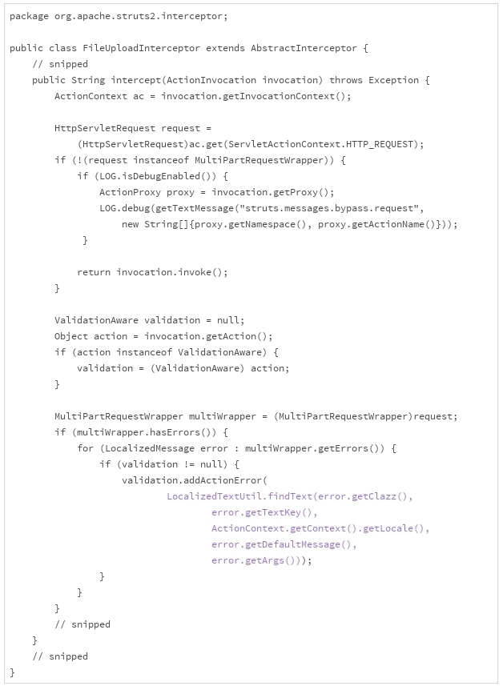
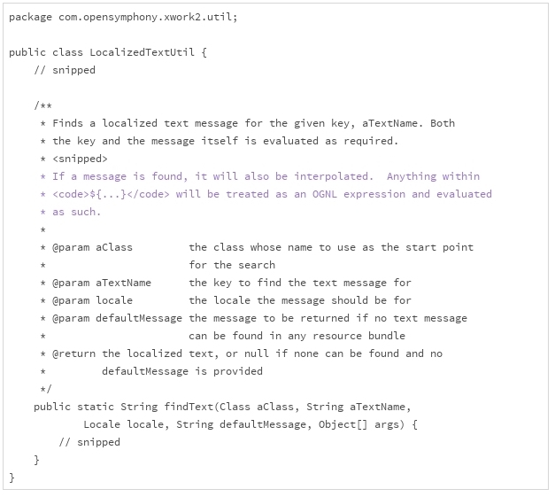

- 00 开篇词 你写的每一行代码，都是你的名片.md.html
- 01 从条件运算符说起，反思什么是好代码.md.html
- 02 把错误关在笼子里的五道关卡.md.html
- 03 优秀程序员的六个关键特质.md.html
- 04 代码规范的价值：复盘苹果公司的GoToFail漏洞.md.html
- 05 经验总结：如何给你的代码起好名字？.md.html
- 06 代码整理的关键逻辑和最佳案例.md.html
- 07 写好注释，真的是小菜一碟吗？.md.html
- 08 写好声明的“八项纪律”.md.html
- 09 怎么用好Java注解？.md.html
- 10 异常处理都有哪些陷阱？.md.html
- 11 组织好代码段，让人对它“一见钟情”.md.html
- 12丨组织好代码文件，要有“用户思维”.md.html
- 13 接口规范，是协作的合约.md.html
- 14 怎么写好用户指南？.md.html
- 15 编写规范代码的检查清单.md.html
- 16丨代码“规范”篇用户答疑.md.html
- 17 为什么需要经济的代码？.md.html
- 18丨思考框架：什么样的代码才是高效的代码？.md.html
- 19 怎么避免过度设计？.md.html
- 20 简单和直观，是永恒的解决方案.md.html
- 21 怎么设计一个简单又直观的接口？.md.html
- 22丨高效率，从超越线程同步开始！.md.html
- 23 怎么减少内存使用，减轻内存管理负担？.md.html
- 24 黑白灰，理解延迟分配的两面性.md.html
- 25 使用有序的代码，调动异步的事件.md.html
- 26 有哪些招惹麻烦的性能陷阱？.md.html
- 27 怎么编写可持续发展的代码？.md.html
- 28 怎么尽量“不写”代码？.md.html
- 29 编写经济代码的检查清单.md.html
- 30丨“代码经济篇”答疑汇总.md.html
- 31 为什么安全的代码这么重要？.md.html
- 32 如何评估代码的安全缺陷？.md.html
- 33 整数的运算有哪些安全威胁？.md.html
- 34 数组和集合，可变量的安全陷阱.md.html
- 35 怎么处理敏感信息？.md.html
- 36 继承有什么安全缺陷？.md.html
- 37 边界，信任的分水岭.md.html
- 38 对象序列化的危害有多大？.md.html
- 39 怎么控制好代码的权力？.md.html
- 40 规范，代码长治久安的基础.md.html
- 41 预案，代码的主动风险管理.md.html
- 42 纵深，代码安全的深度防御.md.html
- 43 编写安全代码的最佳实践清单.md.html
- 44 “代码安全篇”答疑汇总.md.html
- Q&A加餐丨关于代码质量，你关心的那些事儿.md.html
- 结束语 如何成为一个编程好手？.md.html
- 捐赠
31 为什么安全的代码这么重要？
从今天开始，我们进入本专栏的“安全模块”。首先，我们通过一个具体的安全漏洞的案例，来感受下计算机代码是多么的脆弱，以及编写安全的代码为什么如此重要。
评审案例
在Web开发中，“multipart/form-data“类型经常被用来上传文件。比如下面这段描述表单的代码，就是使用multipart/form-data上传文件的一段HTML代码。
<FORM action="http://upload.example.com/"
enctype="multipart/form-data"
method="post">
<P>
Upload the file: <INPUT type="file" name="upload-file"><BR>
<INPUT type="submit" value="Send">
</FORM>
文件上传的操作，会被浏览器解析成类似下面的HTTP请求。
Content-Type: multipart/form-data; boundary=AaB03x
--AaB03x
Content-Disposition: form-data; name="upload-file"; filename="myfile.txt"
Content-Type: text/plain
... contents of myfile.txt ...
--AaB03x--
Web服务器接收后，会解析这段请求，然后执行相关的操作。下面的这段代码，是2017年3月之前Apache Struts 2解析“multipart”请求的实现。
- 其中，蓝色标注的代码，LocalizedTextUtil.findText()，用来查找错误的本地化信息。如果“multipart”请求解析出错，就会触发这个方法。它的规范大致如下：
- 对于LocalizedTextUtil.findText()的规范，我们要留意蓝色字体的部分。这一部分告诉我们，如果信息里包含了OGNL（Object Graph Navigation Language）的表达式，表达式会被执行。
我们把上面的信息放到一块儿来看看：如果“multipart”请求解析出错，会调用LocalizedTextUtil.findText()来查找本地化的错误信息；如果错误包含OGNL表达式，表达式会被执行，以获取解释后的信息；本地化的错误信息会返回给请求者（比如浏览器）。
能不能构造一个包含OGNL表达式的“multipart”请求？对于熟悉HTTP协议和OGNL表达式的用户来说，这是一件轻而易举的事情。如果“multipart”请求不合法，OGNL表达式会被执行，执行的结果以错误信息的形式返回给请求者。
通过“巧妙地”设计OGNL表达式，攻击者可以定制执行的指令，从而定制返回错误信息的内容。这样，攻击者几乎可以获得任何他想要的有价值的内部信息。这就是一个由代码引起的安全漏洞。这个安全漏洞的危险等级是10.0分（请参见下一节“如何评估代码的安全缺陷”），是一个危险等级最高的漏洞。
我们回头看FileUploadInterceptor.intercept()的这段实现代码时，它的危险性其实很清楚，主要有两点：
没有充分了解调用接口（LocalizedTextUtil.findText()）；
允许执行远程请求的表达式（OGNL表达式）。
这两点分别违反了下面的安全编码原则：
清楚调用接口的行为；
跨界的数据不可信任。
真正的威胁
我们一起来看看这个漏洞的几个关键时间点：
2017年1月29日，NIST的NVD（National Vulnerability Database ）接收到了这个漏洞报告。
2017年3月6日，GitHub上出现了漏洞的描述和攻击示例。
2017年3月7日，Apache Struts发布了这个漏洞的修复版本，Struts 2.3.32和2.5.10.1。
2017年3月7日以及随后的几天，出现了更多的攻击示例，很多媒体和专家开始分析这个漏洞，推荐可能的漏洞防范措施，提醒升级Apache Struts到安全的版本。
我们要特别留意两段时间，第一段时间是1月29日到3月7日。这一段时间，安全漏洞已经被发现，但是并没有被公开。这说明这个安全研究者极有专业素养。我猜想，这位名字叫“Nike Zheng”的研究者，在2017年1月29日之前，把他的研究成果通知了Apache Struts。然后双方共同努力，将这个漏洞一直保密到2017年3月7日。这一段时间的保密工作非常重要，要不然漏洞修复之前，会有大批的应用暴露在黑客的攻击之下。
寻找并且通知受到安全漏洞影响的软件供应商，然后双方共同保密一段时间，给漏洞修复留出足够的时间，这是安全研究者的通常做法。如果你认真学习了本专栏的“安全”模块，发现现存代码的安全问题，并且构造出可行的攻击方案，并不是一件特别困难的事情。如果以后你通过阅读代码，发现了一个漏洞，公布漏洞之前，请务必联系代码的维护者，做好漏洞的保密工作，并给他们预留充足的修复时间。
第二段时间是2017年3月7日，这一天漏洞的修复版本发布，漏洞的补丁公之于众，漏洞的细节也就随之公开。专业的研究者和黑客会迅速地解剖漏洞，研究攻击方式。留给应用系统的时间并不多，一定要想方设法在最短的时间内，升级到修复版本。做到这一点并不容易。大部分有效的安全攻击，都是发生在漏洞公布之后，修复版本升级之前。这一段时间，是最危险的一段时间。
Equifax的教训
2017年9月7日，美国最大的征信公司Equifax宣称，7月29日公司发现遭遇黑客攻击，该攻击始于5月中旬，大约有1.45亿条信用记录被盗取，其中包括20多万用户的支付卡信息。在美国，包括社会保障号、出生日期在内的信用记录是高度敏感的信息。有了这些信用记录，一个人不用出面，甚至不需要支付一分钱，就可以买车、买房、申请信用卡。
果然，有人报告自己被冒名顶替买了车、买了宠物。对于一个依靠安全生存的公司，这种情况的发生无疑是令人沮丧的。随后的几天时间里，Equifax的股票下跌超过了30%，蒸发了折合大概60亿美元的市值。
是什么样的安全漏洞导致了这么大的损失？Equifax公司后来确认，引起黑客攻击的漏洞，最主要的就是我们上面讨论过的Apache Struts漏洞。
Apache Struts于2017年3月7日发布了针对该漏洞的修复版本。但是Equifax一直到7月底，都没有完成安全版本的升级，将自己敞露在风险之下。
从3月漏洞细节公布，到5月中旬，黑客用了两个月的时间，设计了攻击方案；然后，从5月中旬到7月底，又用了两个多月的时间，从容地获取了数亿条信用记录。
如果按照严重程度来算，这一次黑客攻击可以排进21世纪已知的重大信息安全事故的前三名。而且，这次安全事故的影响范围，远远超出Equifax公司本身。
人们对征信公司的信任，降低到了前所未有的程度，纷纷冻结自己的征信记录，不允许任何人查询；银行的信用部门，必须更加谨慎地防范信用欺诈，要投入更多的财力、人力。所有受到影响的用户，必须采取更加严格的措施保护自己在其他征信机构、金融机构、保险机构的信用状态。
所有的这些问题，归根到底，都是因为没有及时地完成安全修复版本的升级。这里面固然有技术的问题，但更多的是管理的问题。2017年9月15日，Equifax的首席信息官和首席安全官宣布退休。
五行不起眼的代码，酿造了一起损失数十亿美元的安全事故。受到影响的人群，也可能包括这个漏洞的研究者和修复者，系统的运营者，甚至是攻击者本人。这种不对称的破坏性让人唏嘘，这也正是我们为什么要重视代码安全的背后的原因。
Equifax的教训给我们带来三点启示：
不起眼的代码问题，也可以造成巨大的破坏；
安全修复版本，一定要第一时间更新；
安全漏洞的破坏性，我们很难预料，每个人都可能是安全漏洞的受害者。
编写安全的代码
一般来说，安全的代码是能够抵御安全漏洞威胁的代码。
传统上，我们说到信息安全的时候，最常接触的概念是防火墙、防病毒、防攻击。其实，大部分的安全事故（80%-90%）是由软件的代码漏洞引起的。没有安全保障的代码，是随时都可以坍塌的空中楼阁。
小结
通过对这个案例的讨论，我想和你分享下面三点个人看法：
不起眼的小问题，也会有巨大的安全缺陷，造成难以估量的损失；
编写安全的代码，是我们必须要掌握的基础技能；
安全问题，既是技术问题，也是管理问题。
下一节，我们接着聊安全漏洞的威胁该怎么衡量。再接着，我们来讨论一些常见的编写安全代码的原则和实践。
一起来动手
Equifax公司的问题之一，就是没有及时地更新安全修复。这一般不是疏漏的问题，而是没有充分认识到安全更新的重要性，或者没有把安全修复的计划执行到位。
要想升级到安全修复的版本，我们需要知道两件事：
第一时间获知，某个依赖的软件有了安全更新；
最快速地行动，升级到安全修复版本。
有时候，安全版本升级之前，安全漏洞的细节就已经暴露出来了。这时候，我们也要采取必要的措施：
第一时间知道出现了安全漏洞；
快速寻找、部署漏洞修复的临时方案。
人力总是有限的，我们接触到的信息也是非常有限的。上面的两种措施中，人工都没有办法做到第一点的，除非你使用的是一个完全封闭的系统（完全封闭的系统，一般也是漏洞更多的系统）；而第二点，或多或少的，都需要人工的参与。
我们利用讨论区，来讨论三个问题：
第一个问题是，你有没有使用最新版本软件的习惯？
第二个问题是，你的公司是如何获取安全漏洞信息和安全更新信息的？
第三个问题是，你的公司有没有安全更新的策略？如果有，又是怎么执行的，能不能执行到位？
欢迎你在留言区留言、讨论，我们一起来学习、思考这些老大难的问题！
如果你觉得这篇文章有所帮助，欢迎点击“请朋友读”，把它分享给你的朋友或者同事。
© 2019 - 2023 Liangliang Lee. Powered by gin and hexo-theme-book.